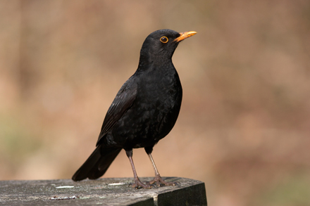

The males live up to their name.
They are black with a bright orange-yellow beak and eye-ring making the adult male
blackbirds one of the most striking garden birds.
Confusingly, the mature female has dark-brown upper parts and underparts, and
yellow-brown bill. The underparts are speckled and she usually has a pale throat.
The juveniles are reddish-brown (rufous) with paler spotting that is similar to that
of the adult female but more spotted and redder. After the juvenile female moults,
late summer to autumn, she is indistinguishable from an older female. However,
while the juvenile male moults his wing feathers will remain brown (known as a
1st-winter male), also the eye ring and bill will be a "dirty" yellow,
and it will be another year before his plumage is entirely black, and his eye ring
and bill are pure orange-yellow.
Blackbirds eat a variety of foods, from earthworms to fruits. The Blackbird feeds on insects and earthworms taken from the ground either by probing the ground, such as a lawn, or noisily turning over leaf litter with its bill. Like the Song Thrush, the Blackbird often runs across the garden, pauses briefly before taking some food, then runs back to cover. More unusual food has included Blackbirds taking tadpoles, newts, and small fish. In the autumn they will often spend much time eating cotoneaster berries and windfall fruits (e.g. apples), which they will aggressively defend from other birds. They also love porridge oats. The Blackbird will feed off the ground or from a ground table, taking sultanas and raisins, and kitchen scraps.
Woodland Farmland Grassland Urban and suburban.
Blackbirds are found everywhere in gardens and countryside and from coasts to hills, although not on the highest peaks.
Blackbirds can be seen all year round.